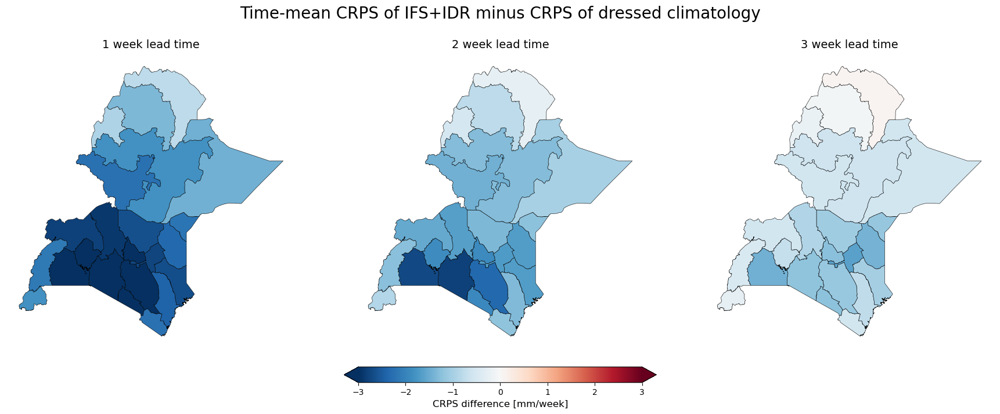
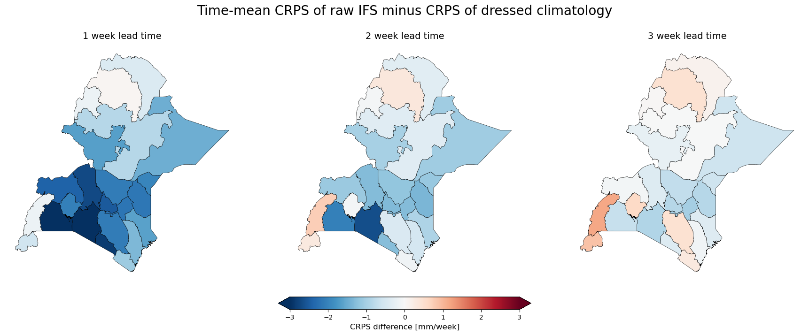
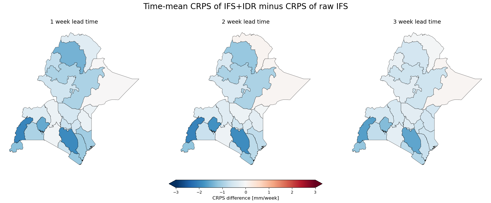

CRPS comparisony | Categories of reliability | Cost-loss ratios | 7d accumulation CRPS
The CRPS difference between the raw IFS, IFS postprocessed with IDR, and IMERG dressed climatology. This is evaluated for weekly means. 1 week lead time means forecast days 0-6, 2 week lead time means forecast days 7-13 etc.


